Встречи из Microsoft Exchange / OWA, Google и iCloud прямо в строке меню macOS. Подключайтесь к Teams, Zoom, Webex и Google Meet в один клик, отвечайте на приглашения и назначайте встречи по занятости коллег.
Meetings from Microsoft Exchange / OWA, Google and iCloud right in your macOS menu bar. Join Teams, Zoom, Webex and Google Meet in one click, answer invitations and book meetings against your colleagues' availability.
Требуется macOS 13 Ventura или новее · Apple Silicon и Intel
Requires macOS 13 Ventura or later · Apple Silicon & Intel
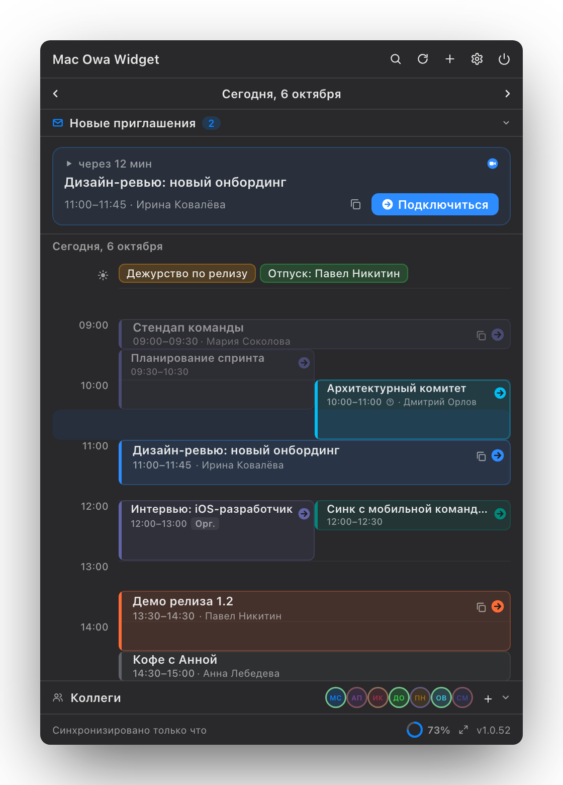
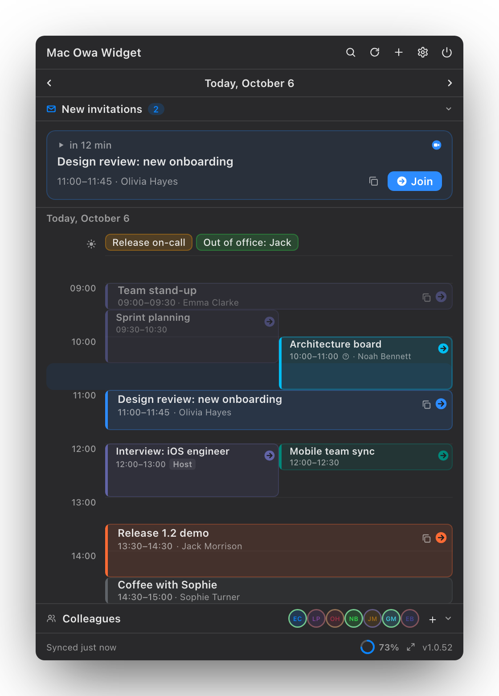
Компактно, быстро и без лишнего — там, где вы и так смотрите время.
Compact, fast and out of the way — right where you already check the time.
Пересекающиеся встречи рядом, события на весь день — отдельной полосой, баннер ближайшей встречи с отсчётом.
Overlapping meetings side by side, all-day events in their own strip, and a next-meeting banner with a countdown.
Находит ссылку на Teams, Zoom, Webex, Google Meet, KTalk и другие. Хоткей Ctrl+Option+J — из любого приложения.
Finds Teams, Zoom, Webex, Google Meet, KTalk and other links. Ctrl+Option+J joins from any app.
Полная повестка с таблицами и ссылками, участники, ответ «Принять / Под вопросом / Отклонить».
The full agenda with tables and links, participants, and Accept / Tentative / Decline.
Сетка занятости участников на неделю, лучшие слоты по дням и выбор длительности.
A week-long availability grid for all attendees, best slots per day and a duration picker.
Сколько до встречи или до её конца, пульсация, когда пора подключаться, и счётчик приглашений ✉︎.
Time until the meeting or until it ends, a pulse when it is time to join, and the ✉︎ invitation count.
Баннеры перед встречей на активном мониторе и панель новых приглашений, переносов и отмен.
Reminder banners on the active display and a panel for new, moved and cancelled meetings.
Поиск по всем загруженным встречам и статусы коллег с переходом в их личные комнаты.
Search across loaded meetings and colleague availability with a jump into their personal rooms.
Несколько аккаунтов OWA и любые календари, которые синхронизирует Mac, на одном таймлайне.
Several OWA accounts and any calendar your Mac syncs, on one timeline.
Пароли в Keychain, данные на диске зашифрованы, HTTPS с привязкой сертификата. Обновления через Sparkle.
Passwords in Keychain, encrypted data on disk, HTTPS with certificate pinning. Updates via Sparkle.
Макеты интерфейса на вымышленных данных.
Interface mockups with fictional data.
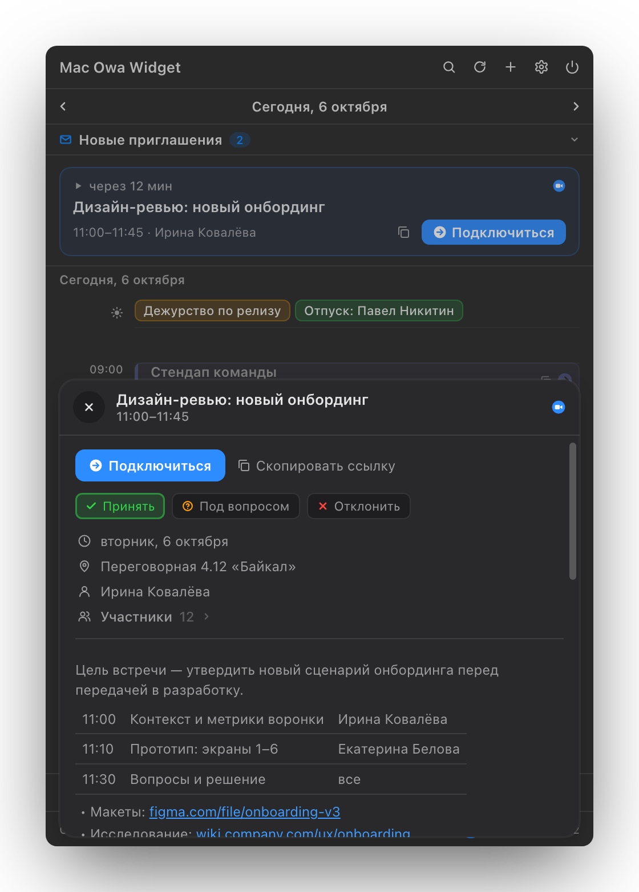
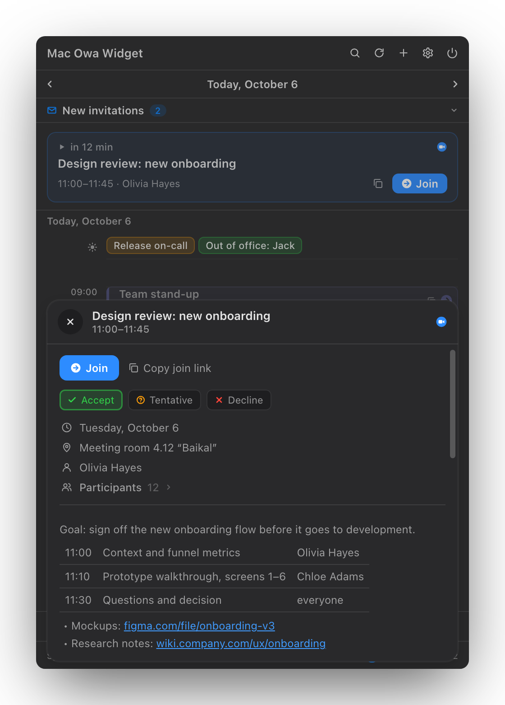
Повестка, участники, ссылки и ответ на приглашение — в карточке поверх таймлайна.
Agenda, participants, links and your RSVP in a card over the timeline.
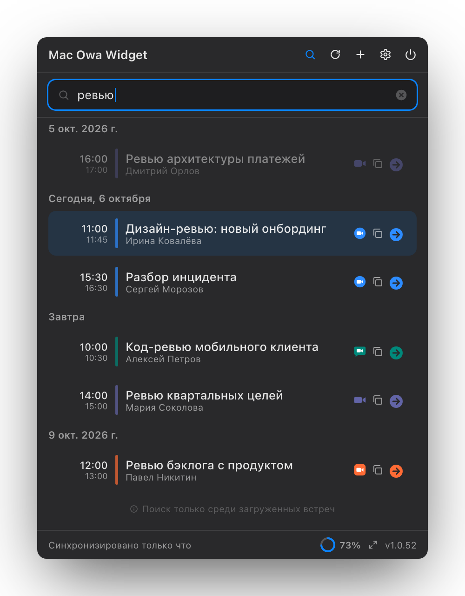
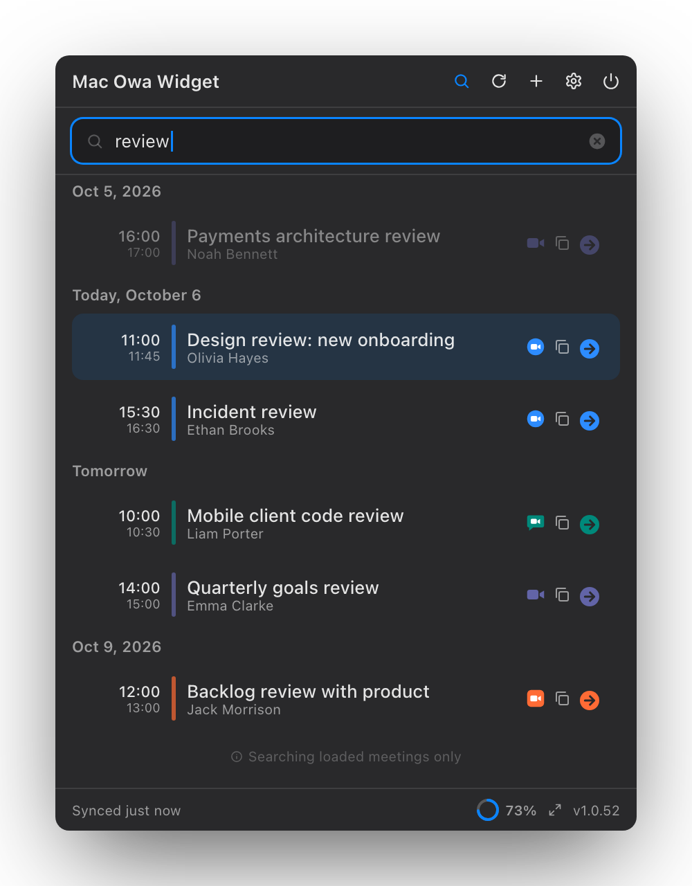
По названию, организатору, участникам, месту и описанию — от недели назад до месяца вперёд.
By title, organizer, participants, location and description, a week back to a month ahead.
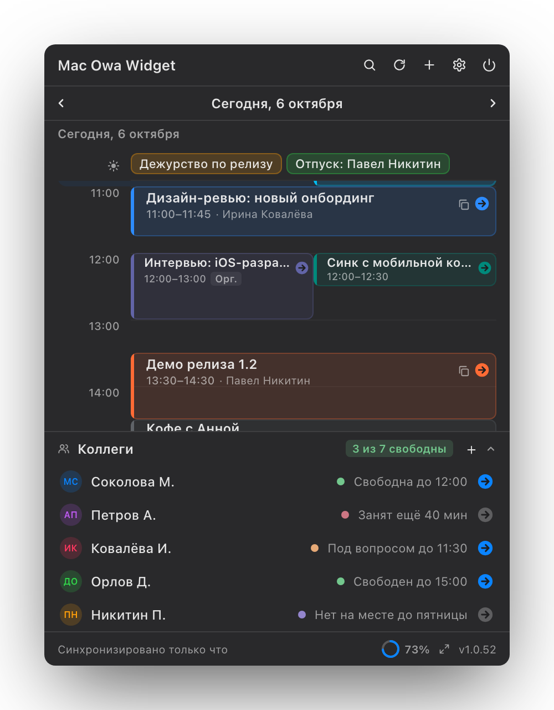
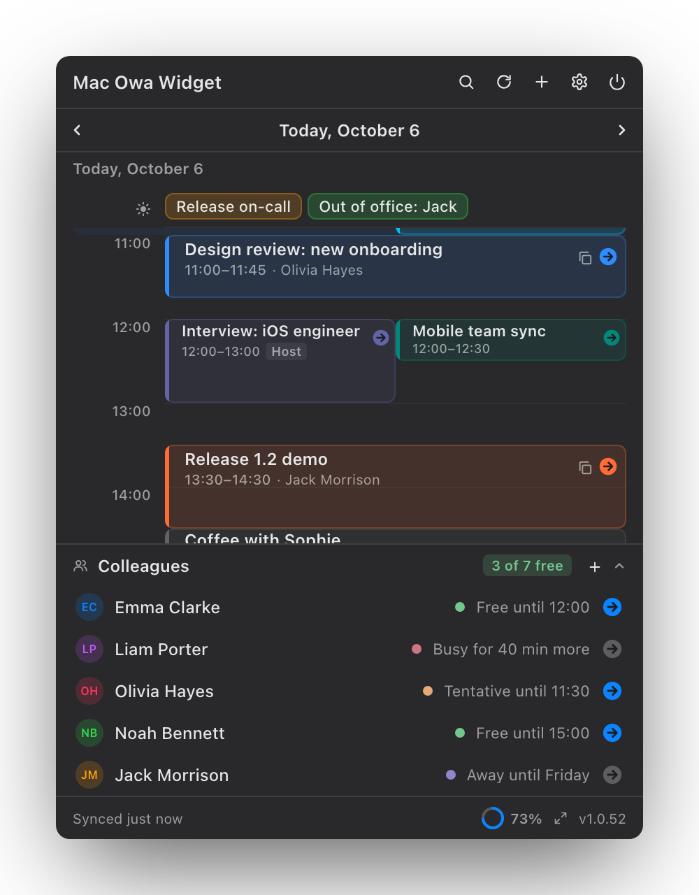
Кто свободен прямо сейчас, и кнопка входа в личную комнату коллеги.
Who is free right now, and a button into a colleague's personal room.
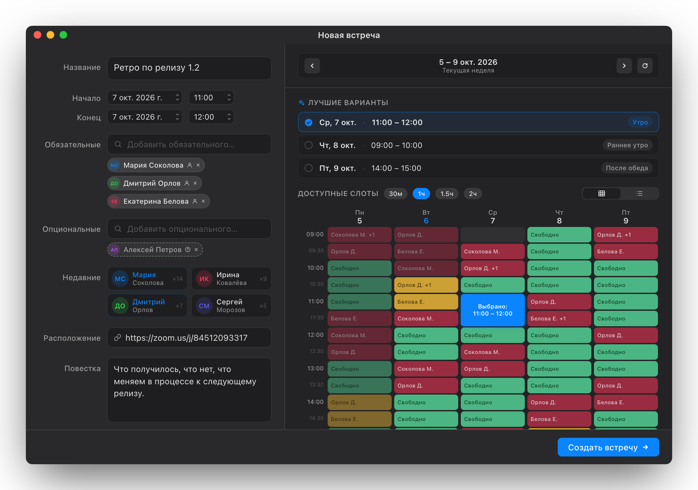
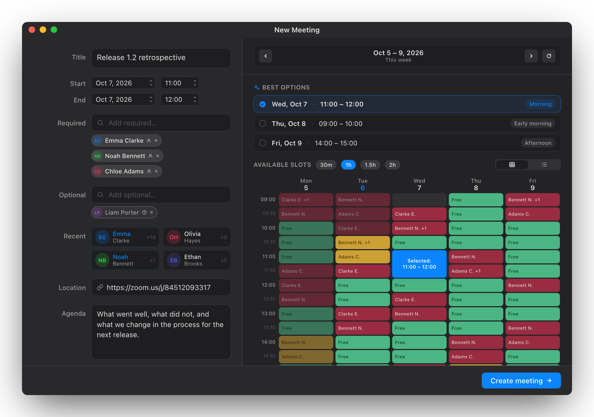
Добавьте участников — сетка покажет занятость всех на неделю, а «Лучшие варианты» предложат слот.
Add attendees and the grid shows everyone's week, while Best options suggests a slot.
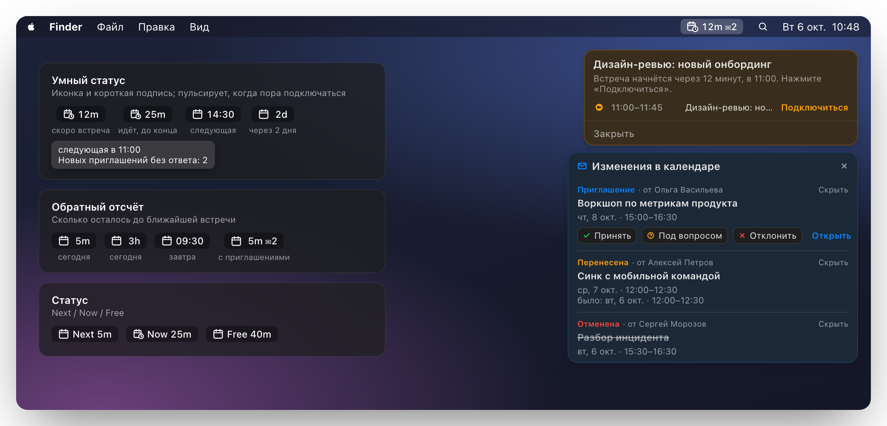
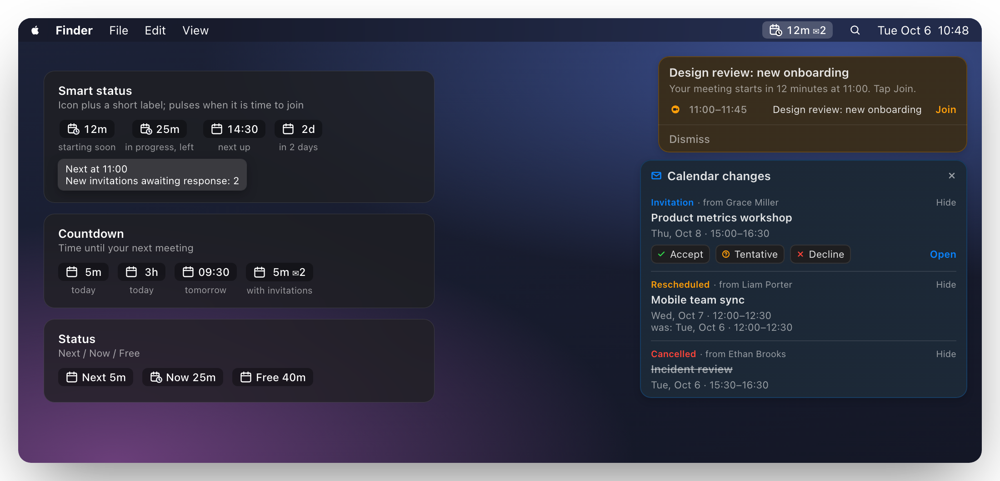
Три режима строки меню, напоминание с кнопкой подключения и панель изменений в календаре.
Three menu bar modes, a reminder with a Join button and the calendar changes panel.
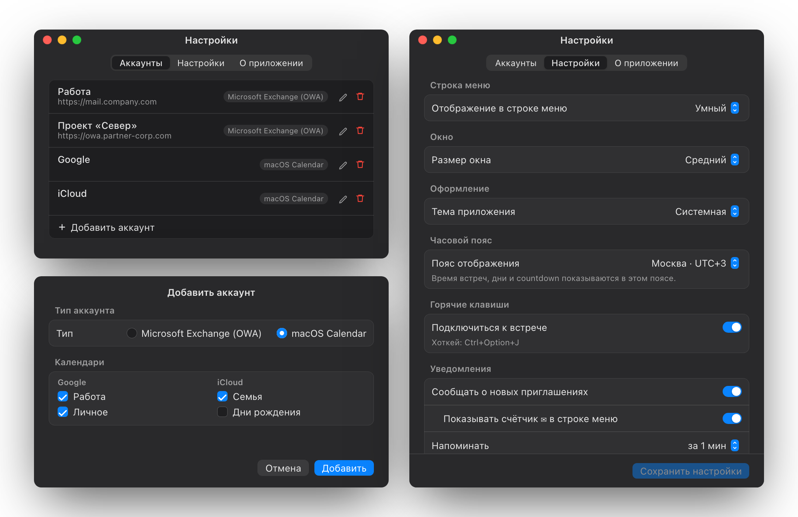
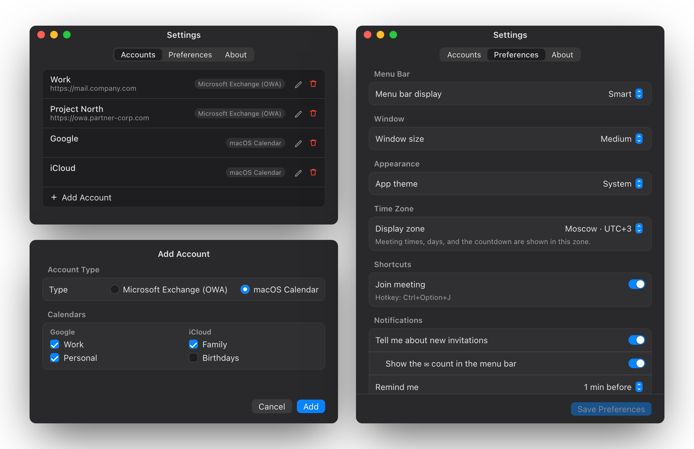
Exchange / OWA и календари macOS (Google, iCloud) рядом, выбор календарей, тема, пояс и уведомления.
Exchange / OWA next to macOS calendars (Google, iCloud), calendar picker, theme, time zone and notifications.
Скачайте архив из последнего релиза и выполните четыре шага.
Download the archive from the latest release and follow four steps.
Откройте последний релиз и скачайте .zip для macOS.
Open the latest release and download the macOS .zip.
Распакуйте архив и перенесите OWAWidget.app в /Applications.
Extract the archive and move OWAWidget.app to /Applications.
Один раз при первой установке, если macOS блокирует запуск:
Once on first install, if macOS blocks the launch:
xattr -dr com.apple.quarantine /Applications/OWAWidget.appOWA Widget появится в строке меню — иконки в Dock нет.
OWA Widget appears in the menu bar — there is no Dock icon.
open /Applications/OWAWidget.appИспользуйте тот же адрес, по которому открываете корпоративную почту в браузере (например https://mail.company.com). Если сомневаетесь — спросите IT-отдел.
Use the same address you open corporate webmail with in your browser (e.g. https://mail.company.com). Ask your IT department if you are not sure.
Если Exchange / OWA доступен только из корпоративной сети — да. Приложение должно видеть тот же сервер, что и браузер. Календарям Google и iCloud VPN не нужен.
If Exchange / OWA is only reachable from the corporate network, yes. The app must be able to reach the same server as your browser. Google and iCloud calendars don't need it.
Да. Добавьте аккаунт «macOS Calendar» — виджет покажет календари, которые синхронизирует Mac: Google, iCloud, локальные. Они доступны только для чтения: ответы на приглашения, создание встреч и «Коллеги» работают с Exchange / OWA.
Yes. Add a “macOS Calendar” account and the widget shows the calendars your Mac syncs: Google, iCloud, local. They are read-only: RSVP, creating meetings and Colleagues need Exchange / OWA.
Только чтобы читать календари Google, iCloud и локальные. Если вы пользуетесь только Exchange / OWA, разрешение можно не давать.
Only to read Google, iCloud and local calendars. If you use Exchange / OWA alone, you can decline it.
Пароль хранится в macOS Keychain, а список аккаунтов и кэш встреч зашифрованы на диске.
The password is stored in macOS Keychain, and the account list and meeting cache are encrypted on disk.
Приложение распространяется без Apple Developer ID подписи, поэтому Gatekeeper помечает первый скачанный bundle как quarantined. Снимите атрибут один раз командой из шага 3.
The app is distributed without an Apple Developer ID signature, so Gatekeeper marks the first downloaded bundle as quarantined. Remove the attribute once with the command in step 3.
Кнопка появляется, когда приложение находит ссылку на звонок. Проверьте, что организатор добавил её в описание, локацию или поле онлайн-встречи.
The button appears when the app finds a call link. Make sure the organizer added it to the body, location or online meeting field.
Бесплатно, с открытым кодом и автоматическими обновлениями.
Free, open source and self-updating.
↓ Скачать OWA WidgetDownload OWA Widget